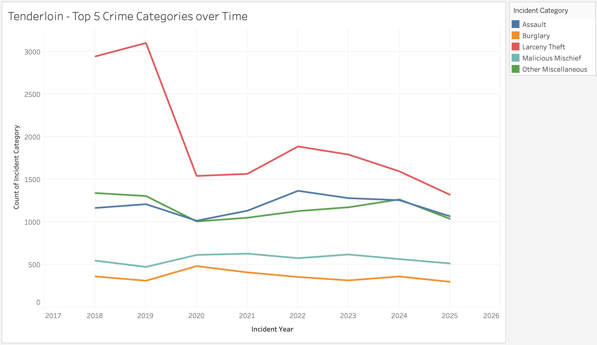
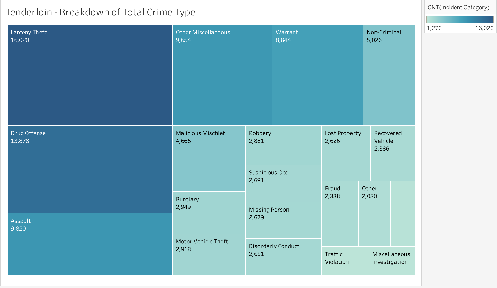

SF Crime on the Map
by Pika Macchi
This project will tell an expanded story of the crime in San Francisco, giving a deeper insight into the breakdown of what exactly happens, and how it varies.
Choropleth Map
Bubble Map
Line Graph of Top 5 Crimes over Time in the Tenderloin

Treemap Showing Greater Breakdown of Crime Types
